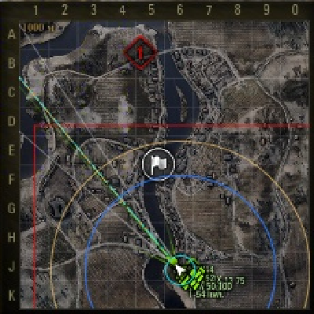
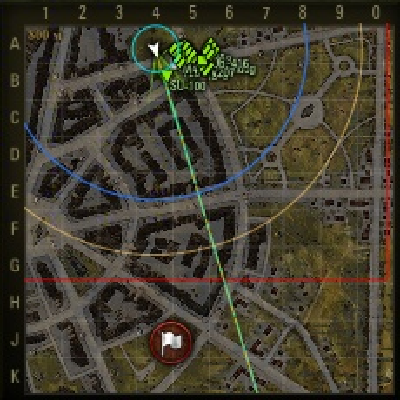

Himmelsdorf

Mapa Himmelsdorf jest chyba najbardziej znaną mapą miejską. Można ją łatwo zapamiętać, gdyż grając na niskich tierach jest ona już dostępna.
Po prawej stronie znajduje się wzniesienie po środku, którego jest zamek. To idealne miejsce do gry dla czołgów ciężkich. Nie ma różnicy, po której stronie mapy się znajdujemy. Grając tzw. heavy tankiem należy jak najszybciej przemieścić się na górkę. Każdy doświadczony gracz wie bowiem, że po drugiej stronie czekać będą już przeciwnicy.
Czołgi średnie mogą być bardzo pomocne dla ciężkich, gdyż także mają silne działa. Mogą się ustawiać w drugiej linii, tuż za czołgami ciężkimi i uderzać w przeciwnika. Ich zadaniem jest także, spotowanie czyli taktyka wykrywania przeciwnika w momencie gdyby w drużynie zabrakło czołgów lekkich. W takim momencie powinni jechać na drugą stronę mapy i zwalczać przeciwnika, zwłaszcza gdy wróg próbuje przejąć sojuszniczą bazę.
Zanim jednak czołgi średnie zajmują rolę zwiadowców, najpierw zajmują się tym czołgi lekkie. Jeśli chodzi o Himmelsdorf powinni głównie podjeżdżać niedaleko pod bazę przeciwnika, jednak w taki sposób, aby być schowanym za ścianą, bądź budynkiem. Czołgi lekkie mogą także jeździć wzdłuż mapy w jedną i drugą stronę. Muszą jednak bardzo uważać, gdyż po środku mapy jest dużo wolnego miejsca, przez co mogą zostać bardzo szybko zniszczone. Czołgi lekkie mają także działo, które także się przydaje. Z racji, że szybko się przemieszczają w momencie gdy sojusznicy są zajęci walką lighty mogą łatwo jechać na górną lub dolną część mapy. Znajdują się tam działa samobieżne, które mogą bardzo łatwo zlikwidować.
Niszczyciele czołgów mają podobne zadanie do czołgów ciężkich. Mogą jechać na prawą stronę mapy i walczyć na górce. Jednak niszczyciele mogą także starać się bronić swoją artylerię przez co nie ruszają się z bazy. W momencie kiedy czołg przeciwnika nadjeżdża są przygotowani, aby łatwo go zniszczyć.
Ostatnim rodzajem czołgów są działa samobieżne. Jeśli grają na mapie miejskiej, jaką niewątpliwie jest Himmelsdorf, mają nie lada orzech do zgryzienia. Ich zadaniem nie jest bowiem przemieszczanie się, lecz pozostanie w miejscu i uderzanie przeciwnika z odległości. Najlepszym miejscem dla artylerii jest prawy górny i dolny róg w zależności od tego, po której stronie mapy się znajdujemy. Tak ustawione działo samobieżne może bez problemu strzelać na odległość pomagając swoim czołgom ciężkim.
Lakeville
Lakeville jest dość charakterystyczną mapą. Po środku mapy znajduje się jezioro, które zajmuje jej większą część. Po jego lewej stronie jest wzniesienie, zaś po prawej stronie mapy jest miasto.
Czołgi ciężkie jadą zazwyczaj na lewą stronę mapy. Jest to idealne miejsce zwłaszcza dla osób, których drużyna została rozstawiona u góry. Innym miejscem do walki dla heavy tanków jest miasto. Można bowiem wtedy łatwo chować się za budynkami i wyjeżdżać w momencie kiedy wiemy, że przeciwnik przeładowuje działo.
Kościół znajdujący się w mieście może służyć także bardzo pomocnie w momencie, gdy chcemy okupić bazę. Czołgi średnie, mogą oczywiście pomagać swoim ciężkim kolegom, jednak zazwyczaj mają słabszy pancerz, i w związku z tym lepiej jest, gdy chowają się za budynkami.
Czołgi lekkie, czyli tzw. lighty powinny się ustawiać po lewej stronie od jeziora, jednak nie powinny być za górami, gdyż łatwo mogą zostać tam zniszczone. Skały, które często występują obok wody, mogą świetnie służyć do ukrycia się i wykrywania pasywnego przeciwników, dzięki czemu sojusznicy będą mogli zadać cios wrogowi. Jest to także dobre miejsce, aby strzelać w przeciwnika, który akurat wyjeżdża zza wzniesienia lub z miasta a nie widzi nas.
Najlepszym miejscem dla niszczycieli czołgów jest lewa strona mapy. Mogą łatwo ustawiać się w podobnych pozycjach jak czołgi ciężkie. Dodatkowo dobrą pozycją dla niszczycieli jest ukrycie się w zaroślach, gdyż pojazd jest wtedy mniej widoczny dla przeciwnika. Aby uchronić swoją artylerię mogą pozostać w bazie, aby w razie potrzeby zlikwidować przeciwnika.
Mapa Lakeville jest nie łatwą jeśli chodzi o działa samobieżne. Artyleria może najłatwiej pomagać wszystkim po lewej stronie mapy poprzez strzelanie w przeciwnika z odległości. Jeśli chodzi o miasto, to bardzo ciężko jest zranić jakiegoś przeciwnika, gdyż większość naszych strzałów będzie trafiało w budynki, za którymi chować się będą wrogowie.
Erlenberg
Jeśli chodzi o Erlenberg jest to mapa ciesząca się sympatią wśród graczy.
Czołgi ciężkie mają duże pole manewru. W zależności od tego, w której drużynie będziemy, zawsze możemy znaleźć dogodne dla siebie miejsce. Widniejący na dole zamek jest doskonałym miejscem, aby chować się przed atakami przeciwnika. Można także podjeżdżać pod ścianę znajdującą się obok i strzelać w przeciwnika. W przypadku drugiej drużyny najlepiej jest się ustawić za górką znajdującą sie naprzeciwko zamku, po drugiej stronie mapy.
Bardzo pomocne mogą okazać się średnie czołgi. Podobnie jak zazwyczaj ustawiają się w drugiej linii za heavy tankami, dzięki czemu mogą zadawać podobne obrażenia, pomimo tego, że mają minimalne od nich różnice. Czołgi medium mają na pewno lepszy silnik dzięki czemu mogą przemieszczać się łatwo z miejsca na miejsce, a więc przydają się także po prawej stronie mapy.
Po środku znajduje się wiele budynków. To idealne miejsce dla czołgów lekkich, czyli popularnych lightów. Dzięki temu, że są szybkie i jak sama nazwa wskazuje, lekkie mogą się łatwo przemieszczać i pasywnie wykrywać przeciwników. W takim przypadku chowanie się za budynkami chroni ich przed atakami przeciwników. Mogą także podjeżdżać blisko przeciwników, tak aby ukryć się po drugiej stronie wzgórza. W taki sposób przeciwnik jest wykryty, a sojusznicy mogą łatwo go zniszczyć.
Niszczyciele czołgów na mapie Erlenberg są prawdziwym skarbem w drużynie. Wystarczy, że dwa lub trzy pojazdy ustawią się na górce obok zamku, a jeśli są nie wykryte, mogą uderzać z odległości w przeciwnika. Niszczyciele jadą także często na prawą stronę mapy. Zazwyczaj toczy się tam bitwa pomiędzy nimi a czołgami średnimi, bądź po prostu przeciwko niszczycielom. Często jest również tak, że przeciwnik próbuje zaatakować bazę. W takim przypadku niszczyciele zostają u siebie i czekają na łatwy cel, który sam się zbliża.
Artyleria może także dużo pomóc swojej drużynie. Z racji takiej, że nie ma tu dużych wzniesień działa samobieżne mogą łatwo atakować przeciwnika. Muszą oczywiście uważać jeśli, przeciwnik próbuje je w jakiś sposób zniszczyć. Właśnie dlatego, dobrym miejscem dla artylerii jest niewielki spadek tuż przy wodzie. W takim przypadku, przeciwnik będzie miał utrudnione zadanie, żeby znaleźć przeciwnika i zniszczyć go.
Malinowka
Malinowka podobnie jak Himmelsdorf jest dość popularną mapą, gdyż jest dostępna na niskich tierach.
Czołgi ciężkie zazwyczaj jadą w górną część mapy. Ustawiając się po różnych stronach mogą łatwo ostrzeliwywać się nawzajem. Jezioro znajdujące się po środku znacznie ułatwia ich pracę. Oznacza ono bowiem, że żaden pojazd nie będzie mógł się do nich zbliżyć, oprócz przodu i tyłu. Górna część mapy sprawia, że posiadacze czołgów ciężkich mogą poczuć się jak prawdziwi liderowie drużyny. Heavy tanki również często zostają w bazie, aby schować się w krzakach i czekać na pracę lightów. Gdy ci wykryją przeciwnika mogą z odległości łątwo strzelać we wroga.
Bardzo dobrym miejscem dla medium tanków jest część jeziora znajdującego się w dolnej częsci mapy. Spadek, jest idealnym miejscem, aby schować się przed atakami przeciwnika. Po drugiej stronie mapy bowiem, najprawdopodobniej czekają kolejne czołgi średnie, a także inne rodzaje pojazdów. Czołgi średnie mogą się także chować w krzakach podobnie jak czołgi cięzkie.
Malinowka jest ciężkim orzechem do zgryzienia dla lekkich czołgów, niezależnie od tego, w której drużynie się znajdują. Po środku jest bowiem puste miejsce, więc jeśli jakikolwiek pojazd wyjedzie od razu zostanie zniszczony przez wroga. W takim wypadku lekkie czołgi muszą wykrywać pojazdy na bokach mapy.
Podobnie jak czołgi ciężkie i średnie, tak i niszczyciele mogą ustawiać się w krzakach. Z racji takiej, że mają najsilniejsze działa, bardzo łatwo mogą, wręcz demolować wrogie pojazdy. W momencie, gdy drużyna przeciwna, ma już mało graczy, niszczyciele czołgów powinny jechać na wrogą bazę i próbować ją okupić. W momencie gdy znajdują się w niej działa samobieżne, są one dla nich bardzo łatwym łupem.
Na mapie Malinowka działa samobieżne także mogą bardzo pomóc drużynie. Łatwo bowiem mogą likwidować pojazdy wroga jeśli są one wykrywane. W momencie, gdy heavy tanki toczą bój między sobą artyleria może zrywać gąsienice przeciwnika i zadawać mu obrażenia dzięki czemu ten jest łatwym łupem dla sojusznika.
Prochorowka
Charakterystyczną częścią tej mapy są tory przebiegające przez całą jej długość od góry do dołu.
Po prawej stronie znajduje się wzgórek. Czołgi ciężkie udają się tam zazwyczaj, ponieważ jest to doskonałe miejsce, aby zaobserwować całą okolicę. Haevy tanki z drużyny przeciwnej podjeżdżają pod górkę jednocześnie zjeżdżając, aby zaatakować, ale także nie zostać uderzonym. Czołgi ciężkie mogą także pojechać w górną, prawą część mapy, w okolice rzeki, aby stamtąd uderzać pojazdy na górze.
Jeśli chodzi o czołgi średnie powinny pojechać na prawą stronę mapy. Znajduje się tam dużo krzaków, dzięki którym trudno je będzie wykryć. Zazwyczaj medium tanki mają nienajgorsze działa, dzięki czemu mogą uderzać w przeciwnika. Inna część czołgów średnich, w momencie gdy jest pewna, że nie ma większego zagrożenia może jechać okupić bazę drużyny przeciwnej.
Na Prochorowce czołgi lekkie mogą jeździć praktycznie wszędzie. Są bowiem bardzo szybkie i mogą łatwo unikać ognia przeciwnika. Jednak muszą uważać, aby wróg nie nie zniszczył im gąsienic, wtedy bowiem jest już prawie pewne, że zostaną zniszczone. W momencie gdy czołgi lekkie przedostaną się do bazy przeciwnika mogą niszczyć działa samobieżne, któe zazwyczaj posiadają mało życia.
Niszczyciele czołgów powinny podobnie jak heavy tanki ustawiać się w górnej, prawej części mapy i podobnie atakować pojazdy znajdujące się na górce. Mogą także strzelać do graczy próbujących przejąć bazę. Do zadań niszczycieli należy także jazda wzdłuż torów, po ich prawej stronie. Jest tam pełno zarośli, dzięki którym będą mniej widoczne. Z takiej pozycji mogą strzelać w przeciwnika, który jest po drugiej stronie mapy, lub do czołgów lekkich, które będą próbowały wykryć sojuszników.
W bazie pozostaje tradycyjnie artyleria. W przypadku mapy Prochorowka może ona łatwo strzelać w przeciwnika, niezależnie od tego w jakim się znajduje miejscu. Wystarczy bowiem, że popularne lighty będą wykrywać pojazdy wroga.
Ruinberg
Ostatnią opisywaną przez mnie mapą jest Ruinberg, czyli mapa po części miejska, a po części trawiasta.
Po lewej stronie znajduje się miasto, do którego zazwyczaj udają się czołgi ciężkie. Tam też toczy się bój pomiędzy nimi. Jest to miejsce, w którym można bardzo dobrze wykorzystywać technikę rysowania boków, która polega na ustawieniu pojazdu w taki sposób, aby odbijało się od niego jak najwięcej pocisków.
Medium tanki mogą pomagać tzw. heavy tankom, jednak powinny także zajeżdżać przeciwnika od flanki, czyli od tyłu, aby go zaskoczyć i zadać jak największe obrażenia. Czołgi średnie mogą także jechać na prawą stronę mapy i czekać na wyjeżdżającego zza budynku przeciwnika. Wtedy mogą bowiem złapać sobie najłatwiejsze łupy.
Pomiędzy budynkami powinny jeździć czołgi lekkie. W taki sposób ułatwiają pracę zwłaszcza działom samobieżnym, które i tak mają już utrudnione zadanie. Mogą się łatwo chować za budynkami, niedaleko przeciwnika, aby go wykrywać. Wtedy sojusznicy mogą zadawać obrażenia wrogom.
Niszczyciele czołgów podobnie jak medium tanki powinny pojechać na prawą stronę mapy i niszczyć wyjeżdżające zza budynków pojazdy graczy z drużyny przeciwnej. W innym przypadku mogą być bardzo pomocne dla czołgów ciężkich i podobnie jak one niszczyć przeciwników w mieście.
Na koniec artyleria. Na Ruinbergu bardzo ciężko jest zadawać jej obrażenia, gdyż każdy strzał oddany przez nią może wylądować na którymś z budynków. Zdarzają się jednak miejsca i luki pomiędzy budynkami, przez które należy strzelić tak aby trafić bezpośrednio w pojazd z drużyny przeciwnej.